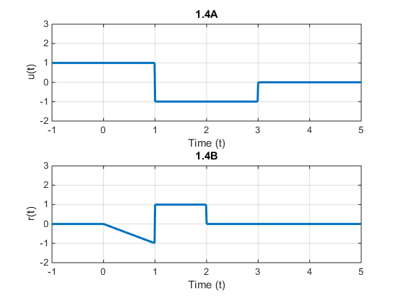

%Copyright (c) 2016, Austin Chase Minor %All rights reserved. % %Redistribution and use in source and binary forms, with or without %modification, are permitted provided that the following conditions are met: %1. Redistributions of source code must retain the above copyright % notice, this list of conditions and the following disclaimer. %2. Redistributions in binary form must reproduce the above copyright % notice, this list of conditions and the following disclaimer in the % documentation and/or other materials provided with the distribution. %3. All advertising materials mentioning features or use of this software % must display the following acknowledgement: % This product includes software developed by Austin Minor. %4. Neither the name of Austin Minor nor the % names of its contributors may be used to endorse or promote products % derived from this software without specific prior written permission.% % %THIS SOFTWARE IS PROVIDED BY Austin Minor ''AS IS'' AND ANY %EXPRESS OR IMPLIED WARRANTIES, INCLUDING, BUT NOT LIMITED TO, THE IMPLIED %WARRANTIES OF MERCHANTABILITY AND FITNESS FOR A PARTICULAR PURPOSE ARE %DISCLAIMED. IN NO EVENT SHALL Austin Minor BE LIABLE FOR ANY %DIRECT, INDIRECT, INCIDENTAL, SPECIAL, EXEMPLARY, OR CONSEQUENTIAL DAMAGES %(INCLUDING, BUT NOT LIMITED TO, PROCUREMENT OF SUBSTITUTE GOODS OR SERVICES; %LOSS OF USE, DATA, OR PROFITS; OR BUSINESS INTERRUPTION) HOWEVER CAUSED AND %ON ANY THEORY OF LIABILITY, WHETHER IN CONTRACT, STRICT LIABILITY, OR TORT %(INCLUDING NEGLIGENCE OR OTHERWISE) ARISING IN ANY WAY OUT OF THE USE OF THIS %SOFTWARE, EVEN IF ADVISED OF THE POSSIBILITY OF SUCH DAMAGE. % %Author: Austin Minor %Version: 1/20/16 x = -1:.01:5; y = (x >= -1) + (-2).*(x >= 1) + (x >=3); b = (x + 1).*(x >= 1) + (-1 * x).*(x >= 0) - (x >= 2); figure subplot(2,1,1) plot(x, y, 'linewidth', 2) xlabel('Time (t)') ylabel('u(t)') title('1.4A') grid on axis([-1 5 -2 3]) subplot(2,1,2) plot(x, b, 'linewidth', 2) xlabel('Time (t)') ylabel('r(t)') title('1.4B') grid on axis([-1 5 -2 3])